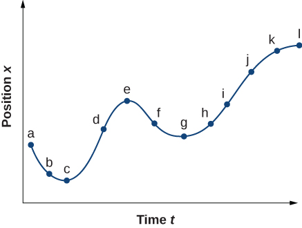

Identify which equations of motion are to be used to solve for unknowns.
Use appropriate equations of motion to solve a two-body pursuit problem.
You might guess that the greater the acceleration of, say, a car moving away from a stop sign, the greater the car’s displacement in a given time. But, we have not developed a specific equation that relates acceleration and displacement. In this section, we look at some convenient equations for kinematic relationships, starting from the definitions of displacement, velocity, and acceleration. We first investigate a single object in motion, called single-body motion. Then we investigate the motion of two objects, called two-body pursuit problems.
Notation
First, let us make some simplifications in notation. Taking the initial time to be zero, as if time is measured with a stopwatch, is a great simplification. Since elapsed time is , taking means that, the final time on the stopwatch. When initial time is taken to be zero, we use the subscript 0 to denote initial values of position and velocity. That is, is the initial position and is the initial velocity. We put no subscripts on the final values. That is, t is the final time, x is the final position, and v is the final velocity. This gives a simpler expression for elapsed time, . It also simplifies the expression for x displacement, which is now . Also, it simplifies the expression for change in velocity, which is now . To summarize, using the simplified notation, with the initial time taken to be zero,
where the subscript 0 denotes an initial value and the absence of a subscript denotes a final value in whatever motion is under consideration.
We now make the important assumption that acceleration is constant. This assumption allows us to avoid using calculus to find instantaneous acceleration. Since acceleration is constant, the average and instantaneous accelerations are equal—that is,
Thus, we can use the symbol a for acceleration at all times. Assuming acceleration to be constant does not seriously limit the situations we can study nor does it degrade the accuracy of our treatment. For one thing, acceleration is constant in a great number of situations. Furthermore, in many other situations we can describe motion accurately by assuming a constant acceleration equal to the average acceleration for that motion. Lastly, for motion during which acceleration changes drastically, such as a car accelerating to top speed and then braking to a stop, motion can be considered in separate parts, each of which has its own constant acceleration.
Displacement and Position from Velocity
To get our first two equations, we start with the definition of average velocity:
Substituting the simplified notation for and yields
Solving for x gives us
where the average velocity is
The equation reflects the fact that when acceleration is constant, is just the simple average of the initial and final velocities. [link] illustrates this concept graphically. In part (a) of the figure, acceleration is constant, with velocity increasing at a constant rate. The average velocity during the 1-h interval from 40 km/h to 80 km/h is 60 km/h:
In part (b), acceleration is not constant. During the 1-h interval, velocity is closer to 80 km/h than 40 km/h. Thus, the average velocity is greater than in part (a).
(a) Velocity-versus-time graph with constant acceleration showing the initial and final velocities . The average velocity is . (b) Velocity-versus-time graph with an acceleration that changes with time. The average velocity is not given by , but is greater than 60 km/h.
Solving for Final Velocity from Acceleration and Time
We can derive another useful equation by manipulating the definition of acceleration:
Substituting the simplified notation for and gives us
Solving for v yields
Calculating Final Velocity
An airplane lands with an initial velocity of 70.0 m/s and then accelerates opposite to the motion at 1.50 m/s2 for 40.0 s. What is its final velocity?
Strategy
First, we identify the knowns: .
Second, we identify the unknown; in this case, it is final velocity .
Last, we determine which equation to use. To do this we figure out which kinematic equation gives the unknown in terms of the knowns. We calculate the final velocity using [link], .
Solution
Substitute the known values and solve:
[link] is a sketch that shows the acceleration and velocity vectors.
The airplane lands with an initial velocity of 70.0 m/s and slows to a final velocity of 10.0 m/s before heading for the terminal. Note the acceleration is negative because its direction is opposite to its velocity, which is positive.
Significance
The final velocity is much less than the initial velocity, as desired when slowing down, but is still positive (see figure). With jet engines, reverse thrust can be maintained long enough to stop the plane and start moving it backward, which is indicated by a negative final velocity, but is not the case here.
In addition to being useful in problem solving, the equation gives us insight into the relationships among velocity, acceleration, and time. We can see, for example, that
Final velocity depends on how large the acceleration is and how long it lasts
If the acceleration is zero, then the final velocity equals the initial velocity (v = v0), as expected (in other words, velocity is constant)
If a is negative, then the final velocity is less than the initial velocity
All these observations fit our intuition. Note that it is always useful to examine basic equations in light of our intuition and experience to check that they do indeed describe nature accurately.
Solving for Final Position with Constant Acceleration
We can combine the previous equations to find a third equation that allows us to calculate the final position of an object experiencing constant acceleration. We start with
Adding to each side of this equation and dividing by 2 gives
Since for constant acceleration, we have
Now we substitute this expression for into the equation for displacement, , yielding
Calculating Displacement of an Accelerating Object
Dragsters can achieve an average acceleration of 26.0 m/s2. Suppose a dragster accelerates from rest at this rate for 5.56 s [link]. How far does it travel in this time?
U.S. Army Top Fuel pilot Tony “The Sarge” Schumacher begins a race with a controlled burnout. (credit: Lt. Col. William Thurmond. Photo Courtesy of U.S. Army.)
Strategy
First, let’s draw a sketch [link]. We are asked to find displacement, which is x if we take to be zero. (Think about as the starting line of a race. It can be anywhere, but we call it zero and measure all other positions relative to it.) We can use the equation when we identify , , and t from the statement of the problem.
Sketch of an accelerating dragster.
Solution
First, we need to identify the knowns. Starting from rest means that , a is given as 26.0 m/s2 and t is given as 5.56 s.
Second, we substitute the known values into the equation to solve for the unknown:
Since the initial position and velocity are both zero, this equation simplifies to
Substituting the identified values of a and t gives
Significance
If we convert 402 m to miles, we find that the distance covered is very close to one-quarter of a mile, the standard distance for drag racing. So, our answer is reasonable. This is an impressive displacement to cover in only 5.56 s, but top-notch dragsters can do a quarter mile in even less time than this. If the dragster were given an initial velocity, this would add another term to the distance equation. If the same acceleration and time are used in the equation, the distance covered would be much greater.
What else can we learn by examining the equation We can see the following relationships:
Displacement depends on the square of the elapsed time when acceleration is not zero. In [link], the dragster covers only one-fourth of the total distance in the first half of the elapsed time.
If acceleration is zero, then initial velocity equals average velocity , and
Solving for Final Velocity from Distance and Acceleration
A fourth useful equation can be obtained from another algebraic manipulation of previous equations. If we solve for t, we get
Substituting this and into , we get
Calculating Final Velocity
Calculate the final velocity of the dragster in [link] without using information about time.
Strategy
The equation is ideally suited to this task because it relates velocities, acceleration, and displacement, and no time information is required.
Solution
First, we identify the known values. We know that v0 = 0, since the dragster starts from rest. We also know that x − x0 = 402 m (this was the answer in [link]). The average acceleration was given by a = 26.0 m/s2.
Second, we substitute the knowns into the equation and solve for v:
Thus,
Significance
A velocity of 145 m/s is about 522 km/h, or about 324 mi/h, but even this breakneck speed is short of the record for the quarter mile. Also, note that a square root has two values; we took the positive value to indicate a velocity in the same direction as the acceleration.
An examination of the equation can produce additional insights into the general relationships among physical quantities:
The final velocity depends on how large the acceleration is and the distance over which it acts.
For a fixed acceleration, a car that is going twice as fast doesn’t simply stop in twice the distance. It takes much farther to stop. (This is why we have reduced speed zones near schools.)
Putting Equations Together
In the following examples, we continue to explore one-dimensional motion, but in situations requiring slightly more algebraic manipulation. The examples also give insight into problem-solving techniques. The note that follows is provided for easy reference to the equations needed. Be aware that these equations are not independent. In many situations we have two unknowns and need two equations from the set to solve for the unknowns. We need as many equations as there are unknowns to solve a given situation.
Summary of Kinematic Equations (constant a)
Before we get into the examples, let’s look at some of the equations more closely to see the behavior of acceleration at extreme values. Rearranging [link], we have
From this we see that, for a finite time, if the difference between the initial and final velocities is small, the acceleration is small, approaching zero in the limit that the initial and final velocities are equal. On the contrary, in the limit for a finite difference between the initial and final velocities, acceleration becomes infinite.
Similarly, rearranging [link], we can express acceleration in terms of velocities and displacement:
Thus, for a finite difference between the initial and final velocities acceleration becomes infinite in the limit the displacement approaches zero. Acceleration approaches zero in the limit the difference in initial and final velocities approaches zero for a finite displacement.
How Far Does a Car Go?
On dry concrete, a car can accelerate opposite to the motion at a rate of 7.00 m/s2, whereas on wet concrete it can accelerate opposite to the motion at only 5.00 m/s2. Find the distances necessary to stop a car moving at 30.0 m/s (about 110 km/h) on (a) dry concrete and (b) wet concrete. (c) Repeat both calculations and find the displacement from the point where the driver sees a traffic light turn red, taking into account his reaction time of 0.500 s to get his foot on the brake.
Strategy
First, we need to draw a sketch [link]. To determine which equations are best to use, we need to list all the known values and identify exactly what we need to solve for.
Sample sketch to visualize acceleration opposite to the motion and stopping distance of a car.
Solution
First, we need to identify the knowns and what we want to solve for. We know that v0 = 30.0 m/s, v = 0, and a = −7.00 m/s2 (a is negative because it is in a direction opposite to velocity). We take x0 to be zero. We are looking for displacement , or x − x0.
Second, we identify the equation that will help us solve the problem. The best equation to use is
This equation is best because it includes only one unknown, x. We know the values of all the other variables in this equation. (Other equations would allow us to solve for x, but they require us to know the stopping time, t, which we do not know. We could use them, but it would entail additional calculations.)
Third, we rearrange the equation to solve for x:
and substitute the known values:
Thus,
This part can be solved in exactly the same manner as (a). The only difference is that the acceleration is −5.00 m/s2. The result is
When the driver reacts, the stopping distance is the same as it is in (a) and (b) for dry and wet concrete. So, to answer this question, we need to calculate how far the car travels during the reaction time, and then add that to the stopping time. It is reasonable to assume the velocity remains constant during the driver’s reaction time.
To do this, we, again, identify the knowns and what we want to solve for. We know that , , and . We take to be zero. We are looking for .
Second, as before, we identify the best equation to use. In this case, works well because the only unknown value is x, which is what we want to solve for.
Third, we substitute the knowns to solve the equation:
This means the car travels 15.0 m while the driver reacts, making the total displacements in the two cases of dry and wet concrete 15.0 m greater than if he reacted instantly.
Last, we then add the displacement during the reaction time to the displacement when braking ([link]),
and find (a) to be 64.3 m + 15.0 m = 79.3 m when dry and (b) to be 90.0 m + 15.0 m = 105 m when wet.
The distance necessary to stop a car varies greatly, depending on road conditions and driver reaction time. Shown here are the braking distances for dry and wet pavement, as calculated in this example, for a car traveling initially at 30.0 m/s. Also shown are the total distances traveled from the point when the driver first sees a light turn red, assuming a 0.500-s reaction time.
Significance
The displacements found in this example seem reasonable for stopping a fast-moving car. It should take longer to stop a car on wet pavement than dry. It is interesting that reaction time adds significantly to the displacements, but more important is the general approach to solving problems. We identify the knowns and the quantities to be determined, then find an appropriate equation. If there is more than one unknown, we need as many independent equations as there are unknowns to solve. There is often more than one way to solve a problem. The various parts of this example can, in fact, be solved by other methods, but the solutions presented here are the shortest.
Calculating Time
Suppose a car merges into freeway traffic on a 200-m-long ramp. If its initial velocity is 10.0 m/s and it accelerates at 2.00 m/s2, how long does it take the car to travel the 200 m up the ramp? (Such information might be useful to a traffic engineer.)
Strategy
First, we draw a sketch [link]. We are asked to solve for time t. As before, we identify the known quantities to choose a convenient physical relationship (that is, an equation with one unknown, t.)
Sketch of a car accelerating on a freeway ramp.
Solution
Again, we identify the knowns and what we want to solve for. We know that , and x = 200 m.
We need to solve for t. The equation works best because the only unknown in the equation is the variable t, for which we need to solve. From this insight we see that when we input the knowns into the equation, we end up with a quadratic equation.
We need to rearrange the equation to solve for t, then substituting the knowns into the equation:
We then simplify the equation. The units of meters cancel because they are in each term. We can get the units of seconds to cancel by taking t = t s, where t is the magnitude of time and s is the unit. Doing so leaves
We then use the quadratic formula to solve for t,
which yields two solutions: t = 10.0 and t = −20.0. A negative value for time is unreasonable, since it would mean the event happened 20 s before the motion began. We can discard that solution. Thus,
Significance
Whenever an equation contains an unknown squared, there are two solutions. In some problems both solutions are meaningful; in others, only one solution is reasonable. The 10.0-s answer seems reasonable for a typical freeway on-ramp.
Check Your Understanding A rocket accelerates at a rate of 20 m/s2 during launch. How long does it take the rocket to reach a velocity of 400 m/s?
To answer this, choose an equation that allows us to solve for time t, given only a , v0 , and v:
Rearrange to solve for t:
Acceleration of a Spaceship
A spaceship has left Earth’s orbit and is on its way to the Moon. It accelerates at 20 m/s2 for 2 min and covers a distance of 1000 km. What are the initial and final velocities of the spaceship?
Strategy
We are asked to find the initial and final velocities of the spaceship. Looking at the kinematic equations, we see that one equation will not give the answer. We must use one kinematic equation to solve for one of the velocities and substitute it into another kinematic equation to get the second velocity. Thus, we solve two of the kinematic equations simultaneously.
SolutionFirst we solve for using
Then we substitute into to solve for the final velocity:
SignificanceThere are six variables in displacement, time, velocity, and acceleration that describe motion in one dimension. The initial conditions of a given problem can be many combinations of these variables. Because of this diversity, solutions may not be as easy as simple substitutions into one of the equations. This example illustrates that solutions to kinematics may require solving two simultaneous kinematic equations.
With the basics of kinematics established, we can go on to many other interesting examples and applications. In the process of developing kinematics, we have also glimpsed a general approach to problem solving that produces both correct answers and insights into physical relationships. The next level of complexity in our kinematics problems involves the motion of two interrelated bodies, called two-body pursuit problems.
Two-Body Pursuit Problems
Up until this point we have looked at examples of motion involving a single body. Even for the problem with two cars and the stopping distances on wet and dry roads, we divided this problem into two separate problems to find the answers. In a two-body pursuit problem, the motions of the objects are coupled—meaning, the unknown we seek depends on the motion of both objects. To solve these problems we write the equations of motion for each object and then solve them simultaneously to find the unknown. This is illustrated in [link].
A two-body pursuit scenario where car 2 has a constant velocity and car 1 is behind with a constant acceleration. Car 1 catches up with car 2 at a later time.
The time and distance required for car 1 to catch car 2 depends on the initial distance car 1 is from car 2 as well as the velocities of both cars and the acceleration of car 1. The kinematic equations describing the motion of both cars must be solved to find these unknowns.
Consider the following example.
Cheetah Catching a Gazelle
A cheetah waits in hiding behind a bush. The cheetah spots a gazelle running past at 10 m/s. At the instant the gazelle passes the cheetah, the cheetah accelerates from rest at 4 m/s2 to catch the gazelle. (a) How long does it take the cheetah to catch the gazelle? (b) What is the displacement of the gazelle and cheetah?
Strategy
We use the set of equations for constant acceleration to solve this problem. Since there are two objects in motion, we have separate equations of motion describing each animal. But what links the equations is a common parameter that has the same value for each animal. If we look at the problem closely, it is clear the common parameter to each animal is their position x at a later time t. Since they both start at , their displacements are the same at a later time t, when the cheetah catches up with the gazelle. If we pick the equation of motion that solves for the displacement for each animal, we can then set the equations equal to each other and solve for the unknown, which is time.
Solution
Equation for the gazelle: The gazelle has a constant velocity, which is its average velocity, since it is not accelerating. Therefore, we use [link] with :
Equation for the cheetah: The cheetah is accelerating from rest, so we use [link] with and :
Now we have an equation of motion for each animal with a common parameter, which can be eliminated to find the solution. In this case, we solve for t:
The gazelle has a constant velocity of 10 m/s, which is its average velocity. The acceleration of the cheetah is 4 m/s2. Evaluating t, the time for the cheetah to reach the gazelle, we have
To get the displacement, we use either the equation of motion for the cheetah or the gazelle, since they should both give the same answer.
Displacement of the cheetah:
Displacement of the gazelle:
We see that both displacements are equal, as expected.
Significance
It is important to analyze the motion of each object and to use the appropriate kinematic equations to describe the individual motion. It is also important to have a good visual perspective of the two-body pursuit problem to see the common parameter that links the motion of both objects.
Check Your Understanding A bicycle has a constant velocity of 10 m/s. A person starts from rest and begins to run to catch up to the bicycle in 30 s when the bicycle is at the same position as the person. What is the acceleration of the person?
.
Summary
When analyzing one-dimensional motion with constant acceleration, identify the known quantities and choose the appropriate equations to solve for the unknowns. Either one or two of the kinematic equations are needed to solve for the unknowns, depending on the known and unknown quantities.
Two-body pursuit problems always require two equations to be solved simultaneously for the unknowns.
Conceptual Questions
When analyzing the motion of a single object, what is the required number of known physical variables that are needed to solve for the unknown quantities using the kinematic equations?
State two scenarios of the kinematics of single object where three known quantities require two kinematic equations to solve for the unknowns.
If the acceleration, time, and displacement are the knowns, and the initial and final velocities are the unknowns, then two kinematic equations must be solved simultaneously. Also if the final velocity, time, and displacement are the knowns then two kinematic equations must be solved for the initial velocity and acceleration.
Problems
A particle moves in a straight line at a constant velocity of 30 m/s. What is its displacement between t = 0 and t = 5.0 s?
150 m
A particle moves in a straight line with an initial velocity of 0 m/s and a constant acceleration of 30 m/s2. If , what is the particle’s position at t = 5 s?
A particle moves in a straight line with an initial velocity of 30 m/s and constant acceleration 30 m/s2. (a) What is its displacement at t = 5 s? (b) What is its velocity at this same time?
a. 525 m;
b.
(a) Sketch a graph of velocity versus time corresponding to the graph of displacement versus time given in the following figure. (b) Identify the time or times (ta, tb, tc, etc.) at which the instantaneous velocity has the greatest positive value. (c) At which times is it zero? (d) At which times is it negative?

(a) Sketch a graph of acceleration versus time corresponding to the graph of velocity versus time given in the following figure. (b) Identify the time or times (ta, tb, tc, etc.) at which the acceleration has the greatest positive value. (c) At which times is it zero? (d) At which times is it negative?
a.
b. The acceleration has the greatest positive value at
c. The acceleration is zero at
d. The acceleration is negative at
A particle has a constant acceleration of 6.0 m/s2. (a) If its initial velocity is 2.0 m/s, at what time is its displacement 5.0 m? (b) What is its velocity at that time?
At t = 10 s, a particle is moving from left to right with a speed of 5.0 m/s. At t = 20 s, the particle is moving right to left with a speed of 8.0 m/s. Assuming the particle’s acceleration is constant, determine (a) its acceleration, (b) its initial velocity, and (c) the instant when its velocity is zero.
a. ;
b. ;
c.
A well-thrown ball is caught in a well-padded mitt. If the acceleration of the ball is, and 1.85 ms elapses from the time the ball first touches the mitt until it stops, what is the initial velocity of the ball?
A bullet in a gun is accelerated from the firing chamber to the end of the barrel at an average rate of for . What is its muzzle velocity (that is, its final velocity)?
(a) A light-rail commuter train accelerates at a rate of 1.35 m/s2. How long does it take to reach its top speed of 80.0 km/h, starting from rest? (b) The same train ordinarily accelerates opposite to the motion at a rate of 1.65 m/s2. How long does it take to come to a stop from its top speed? (c) In emergencies, the train can accelerate opposite to the motion more rapidly, coming to rest from 80.0 km/h in 8.30 s. What is its emergency acceleration in meters per second squared?
While entering a freeway, a car accelerates from rest at a rate of 2.40 m/s2 for 12.0 s. (a) Draw a sketch of the situation. (b) List the knowns in this problem. (c) How far does the car travel in those 12.0 s? To solve this part, first identify the unknown, then indicate how you chose the appropriate equation to solve for it. After choosing the equation, show your steps in solving for the unknown, check your units, and discuss whether the answer is reasonable. (d) What is the car’s final velocity? Solve for this unknown in the same manner as in (c), showing all steps explicitly.
a.
b. Knowns: , and ;
c. , the answer seems reasonable at about 172.8 m; d.
Unreasonable results At the end of a race, a runner accelerates opposite to the motion from a velocity of 9.00 m/s at a rate of 2.00 m/s2. (a) How far does she travel in the next 5.00 s? (b) What is her final velocity? (c) Evaluate the result. Does it make sense?
Blood is accelerated from rest to 30.0 cm/s in a distance of 1.80 cm by the left ventricle of the heart. (a) Make a sketch of the situation. (b) List the knowns in this problem. (c) How long does the acceleration take? To solve this part, first identify the unknown, then discuss how you chose the appropriate equation to solve for it. After choosing the equation, show your steps in solving for the unknown, checking your units. (d) Is the answer reasonable when compared with the time for a heartbeat?
a.
b. Knowns: ;
c. ;
d. yes
During a slap shot, a hockey player accelerates the puck from a velocity of 8.00 m/s to 40.0 m/s in the same direction. If this shot takes , what is the distance over which the puck accelerates?
A powerful motorcycle can accelerate from rest to 26.8 m/s (100 km/h) in only 3.90 s. (a) What is its average acceleration? (b) Assuming constant acceleration, how far does it travel in that time?
a. 6.87 m/s2; b.
Freight trains can produce only relatively small accelerations. (a) What is the final velocity of a freight train that accelerates at a rate of for 8.00 min, starting with an initial velocity of 4.00 m/s? (b) If the train can slow down at a rate of , how long will it take to come to a stop from this velocity? (c) How far will it travel in each case?
A fireworks shell is accelerated from rest to a velocity of 65.0 m/s over a distance of 0.250 m. (a) Calculate the acceleration. (b) How long did the acceleration last?
a. ;
b.
A swan on a lake gets airborne by flapping its wings and running on top of the water. (a) If the swan must reach a velocity of 6.00 m/s to take off and it accelerates from rest at an average rate of , how far will it travel before becoming airborne? (b) How long does this take?
A woodpecker’s brain is specially protected from large accelerations by tendon-like attachments inside the skull. While pecking on a tree, the woodpecker’s head comes to a stop from an initial velocity of 0.600 m/s in a distance of only 2.00 mm. (a) Find the acceleration in meters per second squared and in multiples of g, where g = 9.80 m/s2. (b) Calculate the stopping time. (c) The tendons cradling the brain stretch, making its stopping distance 4.50 mm (greater than the head and, hence, less acceleration of the brain). What is the brain’s acceleration, expressed in multiples of g?
a.
b. ;
c.
An unwary football player collides with a padded goalpost while running at a velocity of 7.50 m/s and comes to a full stop after compressing the padding and his body 0.350 m. (a) What is his acceleration? (b) How long does the collision last?
A care package is dropped out of a cargo plane and lands in the forest. If we assume the care package speed on impact is 54 m/s (123 mph), then what is its acceleration? Assume the trees and snow stops it over a distance of 3.0 m.
Knowns: . We want a, so we can use this equation: .
An express train passes through a station. It enters with an initial velocity of 22.0 m/s and accelerates opposite to the motion at a rate of as it goes through. The station is 210.0 m long. (a) How fast is it going when the nose leaves the station? (b) How long is the nose of the train in the station? (c) If the train is 130 m long, what is the velocity of the end of the train as it leaves? (d) When does the end of the train leave the station?
Unreasonable results Dragsters can actually reach a top speed of 145.0 m/s in only 4.45 s. (a) Calculate the average acceleration for such a dragster. (b) Find the final velocity of this dragster starting from rest and accelerating at the rate found in (a) for 402.0 m (a quarter mile) without using any information on time. (c) Why is the final velocity greater than that used to find the average acceleration? (Hint: Consider whether the assumption of constant acceleration is valid for a dragster. If not, discuss whether the acceleration would be greater at the beginning or end of the run and what effect that would have on the final velocity.)
a. ;
b. ;
c. , because the assumption of constant acceleration is not valid for a dragster. A dragster changes gears and would have a greater acceleration in first gear than second gear than third gear, and so on. The acceleration would be greatest at the beginning, so it would not be accelerating at during the last few meters, but substantially less, and the final velocity would be less than .
Glossary
two-body pursuit problem
a kinematics problem in which the unknowns are calculated by solving the kinematic equations simultaneously for two moving objects